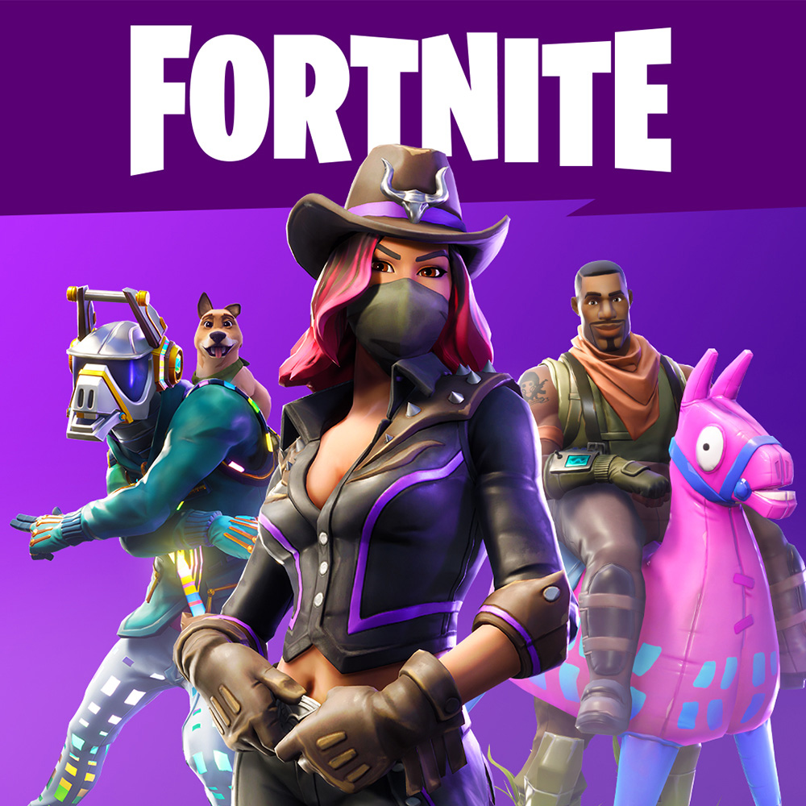

Fortnite

Epic Games
Fortnite is een third-person shooter ontwikkeld door Epic Games en People Can Fly. Het spel wordt uitgegeven door Epic Games en kwam op 25 juli 2017 als vroegtijdige toegang uit, en is beschikbaar voor macOS, iOS, PlayStation 4, Windows en Xbox One
Fortnite bestaat uit twee duidelijk te onderscheiden spelmodi. De Battle royale-modus is een multiplayer-deathmatch, waar honderd spelers (mogelijk in teams) tegen elkaar moeten strijden. Deze modus is gratis te spelen. In de Save the World-modus moet de speler tegen hordes van vijandige wezens vechten om te overleven. Deze modus is speelbaar in singleplayer of in online co-op. Epic Games heeft aangekondigd dat de Save the World -modus ook gratis zal worden na de definitieve uitgave
Save The World
In dit speltype (player vs. enviroment) dient men monsters dood te schieten. Het spel speelt zich af in de hedendaagse wereld, waar het plotselinge verschijnen van een wereldwijde storm ertoe leidt dat 98% van de wereldbevolking verdwijnt, en zombie-achtige wezens opstaan om de rest aan te vallen. Door Epic wordt dit beschouwd als een kruising tussen Minecraft en Left 4 Dead. Het kan als solist worden gespeeld, maar ook in een team tot vier spelers. Alleen of in een team werkt de speler aan verschillende missies op willekeurig gegenereerde kaarten om middelen te verzamelen, forten op te bouwen rond defensieve doelen die bedoeld zijn om de storm te helpen bestrijden en overlevenden te beschermen, en om wapens en valstrikken te maken om te vechten met golven van deze wezens die poging om de doelstellingen te vernietigen. Spelers krijgen beloningen via deze missies om hun heldenkarakters, ondersteuningsteams en arsenaal aan wapen- en vangschema's te verbeteren om moeilijkere missies op te kunnen nemen. Het spel wordt ondersteund door microtransacties om in-game valuta aan te schaffen die kan worden gebruikt voor deze upgrades.
Een stand-alone modus, Fortnite Battle Royale, gebaseerd op het Battle Royale-genre, werd uitgebracht voor Windows, MacOS, PlayStation 4 en Xbox One in september 2017.'Save the World' is momenteel alleen nog betaald te spelen.
Battle Royale
Dit speltype (player vs. player) is volgens het principe van wie als laatst overblijft (Last man standing). Het spel wordt in de derde persoon gespeeld. De spelers worden op een eiland gedropt, met maximaal 100 spelers. Dit kan in de spelmodi solo, duo en squad en soms een LTM (beperkte tijd of Limited Time Mode) waarbij de speler bij solo alleen staat, bij duo samenwerkt met een andere speler en bij squad met een team van maximum vier. Na de landing dient de speler wapens te zoeken ter verdediging en om medespelers uit te schakelen. Het speelveld op het eiland wordt steeds kleiner door een storm die steeds groter wordt. Hierdoor zullen de spelers elkaar op een gegeven moment tegenkomen. De speler die als laatste weet te overleven is de winnaar. De vormgeving van het spel is niet realistisch, en er vloeit geen bloed. In de andere Battle Royale-spellen zoals PlayerUnknown's Battlegrounds, H1Z1 en Arma is de kaart waar men op speelt veel groter. Omdat de kaart van Fortnite Battle Royale zo klein is, kan de speler zijn eigen verdediging bouwen, zoals muren, vloeren en valstrikken. Hiervoor heeft de speler bouwmaterialen nodig die te zijn verkrijgen uit het kapot maken van bijna alles in het spel. Er zijn drie soorten bouwmaterialen: hout, steen en metaal.